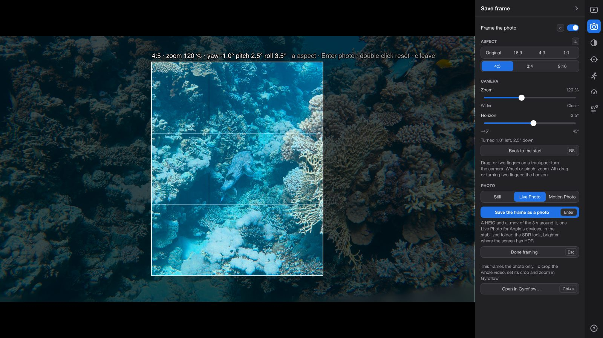
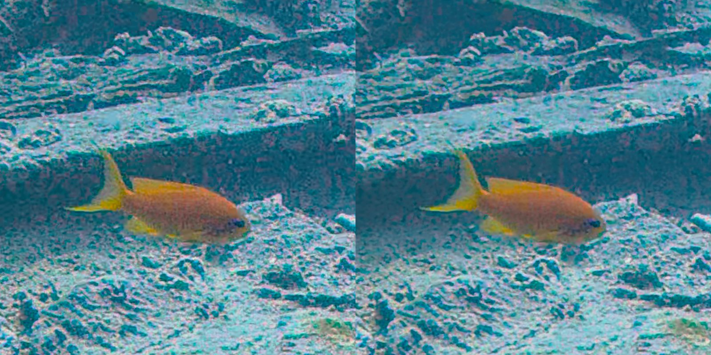
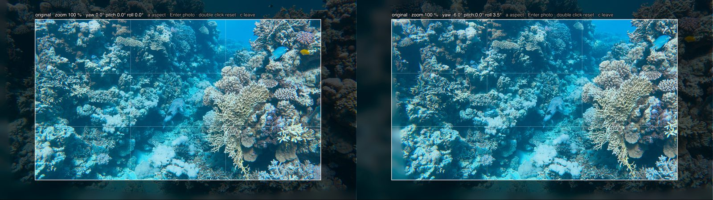
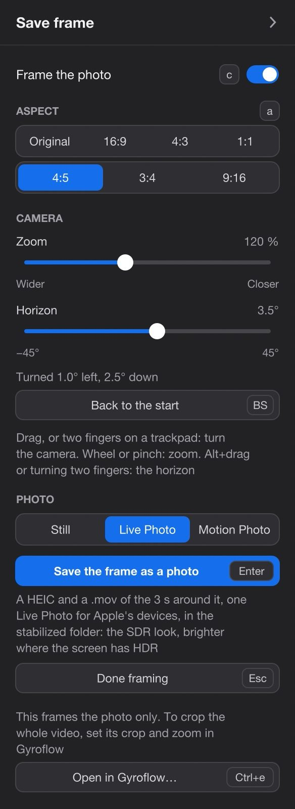
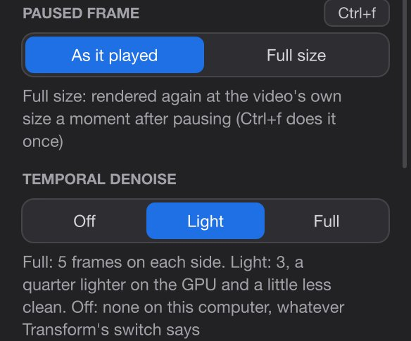

从视频中得到照片
停在那一刻。把它留成照片。
海龟朝镜头转过来，只有一秒钟。在那里暂停，像拍照一样构图，然后按 Enter。你会得到一张干净、稳定、视频全分辨率的照片，在任何屏幕上都显示正确，在 HDR 屏幕上更明亮。

你会得到什么
比视频截图更好。
照片不是从屏幕上截下来的。播放器会从原始文件重新渲染那一帧，带上一张静态照片需要的一切。
-
支持 Live Photo支持 Motion Photo
Live Photo：照片加上 3 秒视频，就像 iPhone 拍的那样。也支持 Android 自己的类型，Motion Photo。Android 的 Motion Photo：照片里带有 3 秒视频，就像 Android 手机拍的那样。Mac App 还能生成 Apple 的 Live Photo。如果你愿意，也可以只要一张静态照片。
-
干净
弱光下，深水中或黄昏时，传感器的噪点大多会消失：时域降噪用这一帧前后的帧重建它。细节保留。
-
稳定、水平
按播放时的样子防抖。在防抖的片段上，保存之前你还可以稍微转动相机，把地平线调平。
-
像照片一样构图
16:9、4:3、方形，用于信息流的 4:5 或 3:4，用于快拍的 9:16，或者视频本身的比例。构图时考虑了镜头，所以从角落移到照片中央的人脸不会被拉伸。整个片段也可以有自己的形状：Transform → Frame。
-
全分辨率
视频本身的尺寸，不受播放设置影响：4K 片段可得 3840 × 2160，方形则为 2160 × 2160。
-
每块屏幕上都正确
普通屏幕显示你选择的风格。HDR 屏幕显示同一张照片，更明亮，带有 HDR 版本的光线。
原理
暂停，构图，保存。
其中两步可以跳过：暂停后按 Alt+s，就已经得到一张整个画面的干净照片。
-
停在那一刻
片刻之后，暂停的帧会在屏幕上被净化。这默认开启；Ctrl+p 关闭它，再按一次重新开启。
-
以全尺寸查看
可选。Ctrl+f 以视频本身的分辨率显示暂停的帧，用来检查对焦和细节。
-
构图
可选。c 在视频上叠加一个取景框。选择它的比例，放大或缩小，转动相机，调平地平线。
-
保存
在取景框中按 Enter，任何时候按 Alt+s，或者点侧边面板中的 Save the frame as a photo。保存在后台进行，你可以继续观看。
在 Mac 上，Alt 是 Option 键（⌥），Ctrl 是 Control。
静帧净化
一帧画面，由十一帧重建。
单个视频帧比照片噪点更多，光线越暗越明显：深水中、黄昏时、室内。那些颗粒来自相机的传感器。所以你暂停时，播放器会稍等片刻（0.4 秒），然后用时域降噪净化这一帧：用暂停的帧本身及其前后各 5 帧重建它。
每一帧先按它们之间的运动，对齐到暂停的那一帧上，然后合并起来。传感器的噪点在每一帧中都不同，所以大多被平均掉了。珊瑚礁、脚蹼和人脸在每一帧中都一样，所以细节得以保留。屏幕上的提示是 Cleaning up the frame…（正在净化画面…），4K 大约需要一秒。
这需要片段已经防抖：正是防抖知道相机在帧与帧之间怎样运动。它在侧边面板中叫 Temporal denoise（时域降噪），会对后面的片段保持开启，直到你关闭它。
全尺寸的暂停帧
为了流畅播放，播放器显示的视频可能比录制时小（侧边面板 Performance & Quality 部分中的播放尺寸和帧率设置）。这时暂停的帧显示的细节就比文件中少。Ctrl+f 以视频本身的分辨率重新渲染暂停的帧，只做一次，并在同一次处理中净化它。想在每次暂停后都这样，就在侧边面板中把 Paused frame 设为 Full size。
这只是用来看的。保存的照片总是从文件以全分辨率渲染，不管有没有按 Ctrl+f。

构图
转动相机，而不只是裁切。
按 c 进入 Save frame（保存画面）。视频上出现一个取景框，框外区域变暗，框内画出三分线。侧边面板打开到它的 Save frame 部分。
在防抖的片段上
播放器给片段防抖时，本来就在渲染一台虚拟相机，它朝着防抖所决定的方向看。在 Save frame 中，你接管这台相机，就像操作装在云台上的相机：
- 拖动，把它向左、右、上、下转动。鼠标下的那个点始终留在鼠标下。在触控板上用两指效果相同。
- 滚轮或双指捏合或 Ctrl+滚轮（触摸板上的捏合）缩放：更宽或更近的视角。
- Alt+拖动或两指旋转调平地平线，左右最多 45°。
- 双击或 Backspace 回到起始状态。
每次移动之后，防抖引擎 Gyroflow 都会朝那个方向重新渲染这一帧。所以转动可以带进屏幕画面之外的场景：它是渲染出来的，而不只是裁出来的。而且是透过 Gyroflow 所了解的镜头渲染的。广角画面中被拍在角落里的一张脸，会被镜头拉伸；转动相机把它带到照片中央，它看起来就是应有的样子，而不像裁下来再放大的角落那样。取景框上方的标注显示比例、缩放和相机转了多少，例如 4:5 · zoom 120 % · yaw 6.0° pitch -2.0° roll 3.5°。
在没有防抖的片段上
没有相机的运动数据，或者防抖关闭时（Ctrl+g），就没有可转动的相机。拖动移动的是画面本身，缩放则缩放画面，从 50 % 到 800 %。也没有地平线可调。
比例
a 切换到下一个比例，Shift+a 切换到上一个：Original、16:9、4:3、1:1、4:5、3:4、9:16。取景框保持居中，长宽都最多占视频的 80 %，这样周围留有空间，让你看到舍弃了什么。
按 Enter 保存，按 c 或 Esc 退出。构图期间，屏幕上的画面不做净化，因为每次转动都会重新渲染它。保存的照片照样会被净化。
整个片段的形状
Save frame 为一张照片构图。要给整个片段设定形状，请使用侧边面板的 Transform → Frame（画幅）：Own（视频自己的）、16:9、4:3、5:4 或 1:1，以及 As is（原样）、Landscape（横向）或 Portrait（竖向）。片段按它播放，导出、精彩瞬间、片段预览和照片也都按它制作。要放大整个片段，请在 Gyroflow 中设置它的缩放（Ctrl+e）。

照片文件
一张照片，适合每块屏幕。
照片是你选择的风格在普通屏幕上的样子，里面还带有一张供 HDR 屏幕使用的增益图。
增益图，用大白话说
HDR（高动态范围）屏幕能显示比普通屏幕的白色亮得多的高光：水面上的阳光、潜水灯。Log 和 HLG 视频保留了这些光线；普通照片做不到。
增益图（gain map）是存放在照片里的一张小的第二图像。它说明照片的每个部分在 HDR 屏幕上要亮多少。不认识增益图的屏幕或 App 会显示普通照片。认识的则显示得更亮，最高达到这一帧的 HDR（HLG）版本，高光最多比照片的白色亮约五倍。
Mac 上是 HEIC，其他平台是 JPEG
在 Mac 上，照片是 HEIC，即 iPhone 使用的照片格式，增益图采用 macOS 15 和 iOS 18 上的“照片”App 能读取的格式。生成增益图需要 macOS 15 或更高版本；在 macOS 12 到 14 上，HEIC 不带增益图，在哪里显示都一样。
在 Windows 上，它是 Ultra HDR JPEG：一张普通的 JPEG，任何 App 都能打开，里面带有 Android 手机和 Chrome 能读取的格式的增益图。
…_8.00s.heic…_8.00s.jpg
画面是什么，逐个风格说明
规则是“所见即所导”：照片的画面，就是正在播放的风格在普通屏幕上显示的样子。各种风格的说明见 Log 素材页面。
| 正在播放的风格 | 照片的画面 | 增益图 |
|---|---|---|
| SDR, camera maker's LUT | DJI 自己把 D-Log M 转换为普通画面的方式（一个 LUT，即颜色查找表） | 到 HLG |
| SDR, NBCU | NBCU 把 HLG 转换为普通画面的方式，一种中性的标准转换 | 到 HLG |
| HDR, HLG | macOS 在普通屏幕上显示的 HLGNBCU 的转换 | 到 HLG |
| SDR tone mapped from HDR by mpv | NBCU 的转换，而不是 mpv 的 | 到 HLG |
| HDR, HLG+DV 和 SDR, HLG+DV （Mac） | NBCU 的转换，而不是 Dolby Vision 的 | 到 HLG |
| 关闭 Log（L），或以 SDR 录制的片段 | 录制原样的帧 | 无：普通照片 |
以 HLG 录制的片段按同样的行处理。以 PQ HDR 录制的片段无法保存为照片。
尺寸
以视频本身的分辨率呈现的防抖视图，按取景框裁切。在起始缩放下，取景框沿较窄的一边保留视频的全部像素：4K 片段在原始比例下为 3840 × 2160，方形为 2160 × 2160，9:16 约为 1214 × 2160。缩小时，直到约 62 % 都保持这个分辨率。放大超过 100 % 是在放大视频：不会增加细节。
净化、防抖，质量 92
照片从原始文件渲染，按播放时的样子防抖，使用 Save frame 的相机和取景框，并用前后各 5 帧净化，除非 Ctrl+p 关闭了 Temporal denoise。一张 4K 照片大约需要 8 秒。
日期和相机
这一帧拍摄的日期和时间（片段的开始时间加上这一帧的时间，精确到秒），以及相机的品牌和型号。DJI 片段的开始时间取自文件名，也就是来自相机的时钟。不写入 GPS 位置，即使相机记录了位置。
存放位置
放在项目的 _Stills 文件夹中，就在 _Exports 旁边，让图片和视频分开。不在项目中的片段，会在它旁边得到一个 stabilized 文件夹。屏幕上的消息和通知会显示 Photo saved（照片已保存）以及文件名。
- _Stills在项目文件夹中
- DJI_20261022152937_0069_D_8.00s.heic8.00 秒处那一帧的照片：一张静态照片，或 Live Photo 中的照片
- DJI_20261022152937_0069_D_8.00s.mov它的 3 秒视频：两者合起来是一个 Live Photo
- DJI_20261022152937_0069_D_8.00s.jpg8.00 秒处那一帧的静态照片
- DJI_20261022152937_0069_D_8.00s_2.MP.jpg同一帧再次保存，作为 Motion Photo：不会覆盖任何文件
Live Photo 和 Motion Photo
支持 Live Photo。也支持 Android 的 Motion Photo。
一张碰一下就会动的照片，就像手机拍的那样。这一帧前后共 3 秒（每侧 1.5 秒）的视频，会大致像 Shift+E 导出那样导出：画面稳定，取景框和相机与照片一致。任何片段都可以，普通片段也行：不是 Log 的，或者没有运动数据的。
Live Photo Mac App
一个 HEIC 和一个 .mov，名称相同，内部共享一个 ID，按照 Apple 的“照片”App 对 Live Photo 的要求制作，所以两者会作为一个整体出现。视频为 HEVC，采用片段本身的帧率，带有声音，采用正在播放的风格，与 Shift+E 导出的一样。在 Dolby Vision 风格下，视频保留它的 Dolby Vision。
Motion Photo Mac 和 Windows
一个文件 …_8.00s.MP.jpg：一张 Ultra HDR JPEG，视频存放在其中、照片之后，与 Android 相机写入 Motion Photo 的方式相同。不认识这种格式的 App 会显示照片。视频为 SDR（Rec.709），采用照片自己的风格，所以在 Google 相册或 Windows 的“照片”App 中播放时，和照片一样亮。早期版本保存的 Motion Photo 保留它们的 HDR 视频。
Still（静态照片）
只有照片，没有视频：Mac 上是 HEIC，Windows 上是 Ultra HDR JPEG。
视频的长边最多 1920 像素，带有片段的第一条音轨（DJI 相机会录两条）。靠近片段开头或结尾时，视频会短一些。如果视频部分失败，照片会单独保存。
它默认开启：Mac 上为 Live PhotoWindows 上为 Motion Photo。侧边面板 Save frame 部分中的 Photo 选项可以更改它，你的选择会保留到下次。
设置
在侧边面板中。
Save frame 部分（相机图标，面板图标栏中的第五个，在 Project、Source、Transform 和 Output 之后）在你按 c 时会自动打开，退出时面板会回到原来的位置。
Save frame
| 设置 | 作用 | 默认 |
|---|---|---|
| Frame the photo c | 在视频上显示取景框。 | 关闭 |
| Aspect a | 取景框的比例：Original、16:9、4:3、1:1、4:5、3:4、9:16。保留到退出播放器为止。 | Original |
| Camera 防抖的片段 | Zoom，从 Wider 到 Closer；Horizon，从 −45° 到 45°。下面一行说明相机转了多少，例如 “Turned 4.2° right, 1.0° down”，或 “Looking where the stabilization does”（朝防抖所看的方向）。 | 100 %，0° |
| Picture 没有防抖的片段 | Zoom，从 Smaller 到 Closer。代替 Camera 显示。 | 100 % |
| Back to the start Backspace | 撤销转动、缩放和地平线调整。 | |
| Photo | Still、Live Photo 或 Motion Photo。Still 或 Motion Photo。（Mac 上还有 Live Photo。）保存时生成什么。保留到下次。 | Live PhotoMotion Photo |
| Save the frame as a photo Enter | 保存照片。它下面的一行说明你会得到什么。 | |
| Done framing Esc | 退出 Save frame。 | |
| Open in Gyroflow… 或 Stabilize in Gyroflow…，Ctrl+e | Save frame 只为照片构图。整个片段的形状在 Transform → Frame 中（见上文）；它的缩放，在 Gyroflow 中设置。见防抖。 |
在 Save frame 之外，Alt+s 随时都能拍下整个防抖视图的照片。面板的 Output → Export 会指向这里：A still or a Live Photo: Save frame（静态照片或 Live Photo：见 Save frame）。
Performance & Quality
| 设置 | 作用 | 默认 |
|---|---|---|
| Paused frame | As it played：以播放尺寸显示暂停的帧。Full size：每次暂停片刻后，以视频本身的尺寸重新渲染（Ctrl+f 只做一次）。 | As it played |
| Temporal denoise Ctrl+p | 用暂停的帧及其前后各 5 帧重建画面，用于屏幕显示和你保存的照片。 | 开启 |
在设置文件 gyroflow.conf 中：live_photo 可设为 yes（Mac 上为 Live Photo，其他平台为 Motion Photo）、live、motion 或 no（静态照片）。still_radius、still_delay 和 still_grain 只调整屏幕上的静帧净化：保存的照片始终使用前后各 5 帧。


快捷键
本页的所有按键。
在 Mac 上，Alt 是 Option（⌥），Ctrl 是 Control。在触控板上，两指转动相机，捏合缩放，两指旋转调平地平线。
局限
照片里没有的东西。
- 仅用于播放的修正。去除水下色边（Ctrl+a）只在播放时起作用，照片和导出的文件中没有。水下照片会保留屏幕上已去除的色边。视频上叠加的深度和其他读数也不在照片里。
- 有三种风格无法完全匹配。在 SDR tone mapped from HDR by mpv 和两种 HLG+DV 风格下，照片的画面是 NBCU 的转换，与屏幕上显示的接近，但不完全相同。Dolby Vision 面板中设置的 trim 参数不会作用到照片上。在 mpv 色调映射的风格下，Live Photo 的 3 秒视频是 HDR（HLG）。Motion Photo 的视频始终是 SDR，采用照片自己的风格。
- 转动相机需要防抖。在没有运动数据的片段上，或 Ctrl+g 关闭时，Save frame 只能移动和缩放画面，也无法调平地平线。静帧净化同样需要防抖。
- 放大不会增加细节。超过 100 % 时，照片是视频的放大。
- 照片的净化方式是固定的。保存的照片始终使用前后各 5 帧；
gyroflow.conf中的调整只作用于屏幕显示。靠近片段开头或结尾时，可用的帧会少一些。 - 没有位置信息。只写入日期、时间和相机。在 Windows 上，非 DJI 片段的时间是 UTC，而不是你所在的时区。
- Live Photo 需要 Mac App。在 Windows 上请选择 Motion Photo。在用你自己的 mpv 而不是 App 配置的 Mac 上，照片是 Ultra HDR JPEG，Live Photo 会变成 Motion Photo。视频以片段的帧率播放，例如每秒 59.94 帧。
- 照片中的 HDR 需要保存它的 Mac 运行 macOS 15 或更高版本；更早的版本保存的是普通 HEIC。以 PQ HDR 录制的片段无法保存为照片。SDR 片段，以及关闭了 Log 转换的 Log 片段，得到的照片不带增益图。
常见问题
关于照片。
为什么不直接截图？
截图是你屏幕的大小，是播放时的那一帧，带着它的噪点，而且只是一张普通图片。照片则从文件渲染：全分辨率，用前后的帧净化，经过构图，并带有供 HDR 屏幕使用的增益图。
在没有 HDR 的屏幕上，或者在聊天 App 里，它显示得对吗？
对。照片本身就是普通屏幕上显示的风格。增益图只在屏幕和 App 能显示的地方增加亮度；在其他地方会被忽略。
保存时可以继续观看吗？
可以。照片在后台生成，一张 4K 照片大约 8 秒，Live Photo 或 Motion Photo 会稍长一些，因为它们的 3 秒视频也要导出。保存完成时，消息和通知会告诉你文件名，文件名中带有这一帧的时间，例如 _8.00s。
能这样裁切整段视频吗？
Save frame 是用来拍照片的。对整个片段，侧边面板的 Transform → Frame 可以给它设定形状（16:9、4:3、5:4、方形、横向或竖向），它就按这个形状播放、导出，并制作精彩瞬间和照片。要放大整个片段，请在 Gyroflow 中设置它的缩放（Ctrl+e）。见防抖。
能一次为每个标记都生成一张照片吗？
可以：Photos of all marks（所有标记的照片），在 Action Footage Library 中，这个小 App 能一次处理整个旅行。静态照片、Live Photo（在 Mac 上）或 Motion Photo，存入 _Stills，每个只做一次：你删掉的照片不会再生成。
我的原始视频会被修改吗？
不会。照片是一个新文件；视频只被读取。
试一试
停在你最好的那一秒。
免费，无需账户，你的素材保持原样。